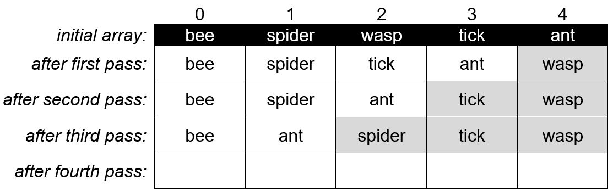
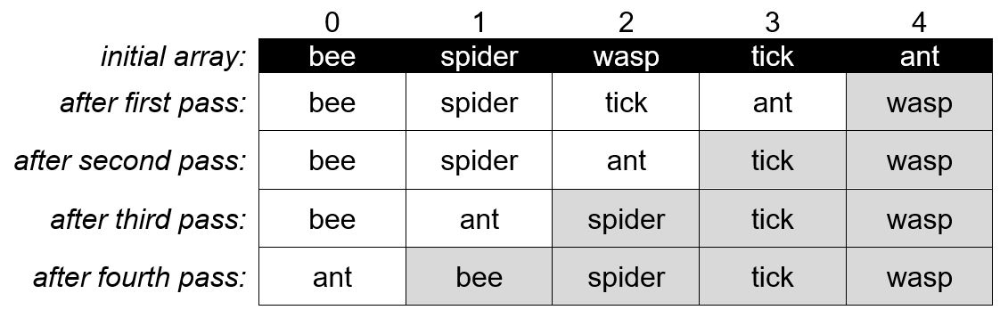
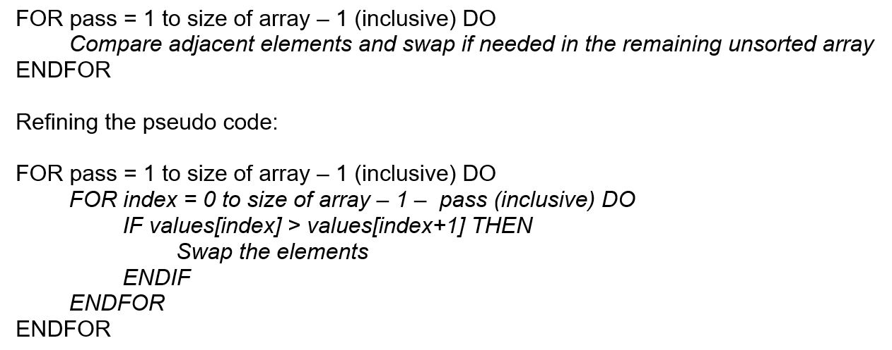

CSE1OOF
Workshop 9
Press SHIFT ? for help
Press f for fullscreen
Press CAPS for pointer
Searching Arrays Part 1
public class IntArray
{
private int[] values;
public IntArray(int size)
{
if (size > 0)
{
values = new int[size];
}
else
{
values = new int[10];
}
fillArray();
}
public void fillArray()
{
// random integers from 0 to 19 inclusive
for (int i = 0; i < values.length; ++i)
{
values[i] = (int)(Math.random()*20);
}
}
public void displayArray()
{
for (int i = 0; i < values.length; ++i)
{
System.out.print(values[i] + " ");
}
System.out.println();
}
}
Instance methods are provided to (re)populate an array with random numbers and display its contents.
Further functionality is required, namely to search the array for a given value and to sort the array in ascending order.
(Zoom in and out with Alt-click)
Part 1 Searching an Array
To find a value in an unsorted array, we must start at the beginning and iterate through the array looking for the search key
Task 1
public int search(int target)
{
for (int i = 0; i < values.length; i++)
{
if (target == values[i])
{
return i;
}
}
return -1;
} Code long at home:
https://repl.it/@mefitzgerald/ws9skeleton
Task 2
public int searchLast(int target)
{
for (int i = values.length - 1; i >= 0; i--)
{
if (target == values[i])
{
return i;
}
}
return -1;
}Part 2: Sorting an array
Sometimes we wish to sort an array so that the values in the array are organised in a specific orderHow do we sort it into numerical order?
Many sort algorithms have been developed for example; (Note we are not looking at efficiency of sorting algorithms or optimised solutions here – you will consider that in other subjects such as Algorithms and Data Structures)Bubble sort
The array elements are in any order and we want to rearrange them into order from minimum to maximum (ascending order)
So we repeatedly compare neighbouring elements and swap them if they are not in the correct order relative to each other. After the first pass, the largest element is in the correct position (it has bubbled up into the last position) and does not need to be checked in the second pass.
After the second pass, the next largest element is also in the correct position (it has bubbled up into the second last position) and so on.
The dark shaded area is the sorted part of the array which grows by 1 after each pass.
Task 3
Show the passes in using bubble sort to sort the following array of strings in alphabetical orderFirst Pass
Second Pass
Third Pass
Fourth Pass
And now the array is sorted :)
Algorithm for bubble sort
Swapping elements in arrays
So sometimes we need to swap elements, for example, swap the values at index 1 and index 2Step 1
Copy the first value into the temporary storeStep 2
Copy the second value into the position of the first valueStep 3
Copy the temporary value into the position of the second valueTask 4
Complete the code for the method swap
private void swap(int index1, int index2)
{
int temp = values[index1];
values[index1] = values[index2];
values[index2]= temp;
}Task 5
Complete the code for the method bubbleSort
public void bubbleSort()
{
int n = values.length;
//outer loop for each pass
for(int i = 0; i < n; i++) {
//inner loop to iterate through arrap
for(int j=1; j < (n-i); j++) {
//compare array values
if(values[j-1] > values[j]) {
swap(j,j-1);
}
}
}
}
}Note:
Skeleton code relevant to this workshop (IntArray.java and IntArrayTest.java) can be copied from the csilib area into a suitable directory in your own latcs account if you wish to test your code.cp /home/1st/csilib/cse1oof/ws09/* .